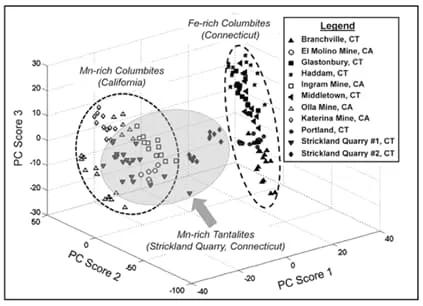
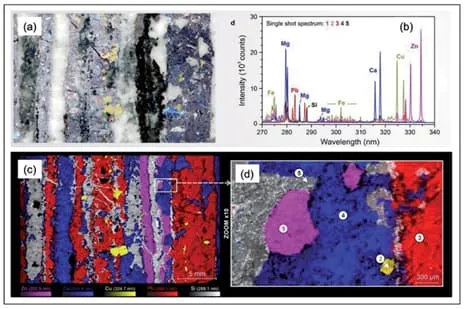

Mining
Spectoshimatsu online scanners and portable analyzers are adaptable candidate systems to fulfill the needs of mining industry. Several mineralogical challenges could be addressed from field explorations to core analysis and extraction processes. The scope of the mining targets extends from rare earth elements (REEs) detection to the minerals’ exploration. Functional applications of LIBS system cover the simultenous analysis of mineral resources of rocks, sediments and soil by eliminating the matrix effects. The system applications also cover the scrap recycling processes to meet ever increasing demands for green technologies.


Material identification and elemental analysis are the main approaches in geochemical characterizations of ores. Spectoshimatsu versatile instrumentations have many advantages of being fast, remote and user-friendly comparing to competitive methods of XRF or XRD.. Also, LIBS has priority in detection of light elements such as Li, B and Be as well as carbon with no or little sample preparation. The in-situ identification includes benchtop and field-portable features.
The Spectoshimatsu LIBS scanner could be exploited during sorting. 2D and 3D compositional mappings of specimens with microscopic resolution and high sensitivity are accessible. This real time technique is capable of quantification of wide set of rocks from ornamental stones such as marble, granite, limestone, slate, sandstone, turquoise and quartzite to iron, copper, aluminum and tin.